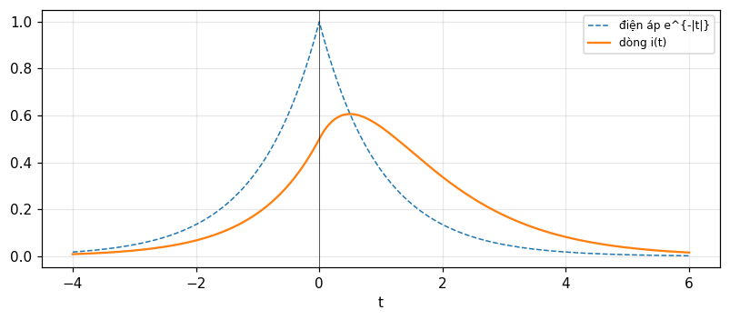

Biến đổi Laplace: dải hội tụ, đáp ứng quá độ, bài toán giá trị đầu
Biến đổi Laplace hai phía và một phía, dải hội tụ, các định lý, cặp biến đổi, hàm truyền và đáp ứng xung, hành vi tự nhiên, bài toán giá trị đầu, bài toán đóng cắt và công thức nghịch đảo (Bracewell, chương 14).
Bài giảng (slide) Thực hành với Jupyter Notebook Quiz tự kiểm tra
Bài giảng (slide)
Biến đổi Laplace: dải hội tụ, đáp ứng quá độ, bài toán giá trị đầu
- Định nghĩa biến đổi Laplace hai phía, một phía (0^+) và dạng nhân p; xác định dải hội tụ \alpha<\mathrm{Re}\,p<\beta.
- Dùng bảng định lý và cặp Laplace (dịch, điều biến, vi phân, tích phân, chập) kèm dải hội tụ.
- Giải bài toán quá độ bằng phương trình phụ, hàm truyền và đáp ứng xung; tìm hành vi tự nhiên từ phương trình đặc trưng, kể cả nghiệm bội.
- Giải bài toán giá trị đầu bằng phương pháp đưa điều kiện đầu vào hàm kích thích dưới dạng xung, và bài toán đóng cắt.
- Hiểu công thức nghịch đảo (đường Bromwich), rằng cùng một F(p) ứng với nhiều hàm tùy dải, và Laplace so với Fourier.
Dùng nút, chấm tròn hoặc phím ← → để chuyển slide.
Định nghĩa và dải hội tụ
- Định nghĩa các dạng
- Dải hội tụ
- Định lý kèm dải
Từ Fourier tới Laplace
Bây giờ t vẫn thực còn p là biến phức, xét \int_{-\infty}^\infty f(t)e^{-pt}dt: biến đổi Laplace (hai phía) của f(t). Nó chỉ khác biến đổi Fourier về ký hiệu; khi phần thực của p bằng 0 thì trùng hoàn toàn, nhưng ứng dụng khác nhau sâu sắc (Bracewell, tr. 380). Dạng khác: một phía \int_0^\infty f(t)e^{-pt}dt, phát sinh khi phân tích quá độ mà f(t) xuất hiện sau khi bật công tắc tại t=0; nếu coi f=0 với t<0 thì nó nằm trong định nghĩa hai phía. Cận dưới thực ra là 0^+: \int_0^\infty f\,e^{-pt}dt nghĩa là \lim_{\epsilon\to0}\int_\epsilon^\infty; và dạng nhân p p\int f e^{-pt}dt.
Dạng nhân p và ký hiệu toán tử
Nhiều tác giả dùng dạng nhân p để nối với ký hiệu toán tử của Heaviside, người thành công sớm với các phương trình vi phân của quá độ điện. Toán tử dẫn nạp Y(p), với p là toán tử đạo hàm theo thời gian, hóa ra là biến đổi nhân p của đáp ứng với bước điện áp đơn vị. Dạng nhân p đang lụi tàn nên mối nối với tài liệu điện kỹ thuật cũ bị gián đoạn; bỏ p thì khớp hoàn toàn với Fourier và có thể dùng đáp ứng xung thay vì đáp ứng bước. Trong hệ thức i(t)=Y(p)v(t), Y(p) chính là biến đổi Laplace hai phía (không nhân p) của đáp ứng với xung điện áp đơn vị (Bracewell, tr. 381).
Công thức nghịch đảo Bromwich
Có tính đối xứng như nghịch đảo Fourier, nhưng p phức nên phải xác định một đường tích phân trên mặt phẳng phức: f(t)=\dfrac1{2\pi i}\int_{c-i\infty}^{c+i\infty}F_L(p)e^{pt}dp với c nằm trong dải hội tụ (Bracewell, tr. 381). Số đo với F_L=1/(p+1)^2 và c=0.5 tại t=2: tích phân số cho 0.2707 trong khi te^{-t} = 0.2707. Ưu điểm hay được nêu của Laplace so với Fourier cho quá độ; nhưng ưu điểm căn bản của Fourier là diễn giải vật lý được, như phổ hay ảnh nhiễu xạ; sau khi lấy Laplace của một phương trình ta chỉ còn nắm bắt toán học chứ không phải vật lý ý nghĩa của nó.
Dải hội tụ
Nhân f(t) với e^{-pt} rồi tích phân. Với p thực, tích f(t)e^{-pt} tại p=0 là f và diện tích là tích phân của f. Khi p giảm về âm, e^{-pt} là thừa số ngày càng lớn nhân f ở t>0: có giới hạn \alpha mà p phải vượt qua để tích phân hữu hạn. Tương tự với p dương, diện tích có thể vô hạn ở bên trái, tạo giới hạn \beta. Với p phức chỉ phần thực quan trọng. Biến đổi Laplace vậy không tồn tại với mọi p mà chỉ với \alpha<\mathrm{Re}\,p<\beta: một dải trên mặt phẳng p (hình 14.2), không nhất thiết chứa trục ảo, thậm chí có thể rỗng (Bracewell, tr. 382 đến 383).
Ví dụ về dải: có, thu hẹp và rỗng
e^{-t}H(t): phía phải hội tụ nếu \mathrm{Re}\,p>-1 và không có giới hạn \beta (vì bằng 0 bên trái): dải \mathrm{Re}\,p>-1, F_L=1/(p+1); tại p=0.5 tích phân số 0.6667 và công thức 0.6667. e^{-|t|}: dải -1<\mathrm{Re}\,p<1, F_L=2/(1-p^2); tại p=0.5: 2.6667. e^{-t}H(t) tại p=-1.5 (ngoài dải) phân kỳ: tích phân đến T=10 là 294.8 và đến T=20 là 44050.9, tăng vọt. \exp[tH(t)] cần \mathrm{Re}\,p<0 để vế trái hội tụ nhưng \mathrm{Re}\,p>1 cho vế phải, nên không có dải nào. e^{it} chỉ hội tụ (theo nghĩa suy rộng) trên đường \mathrm{Re}\,p=0: dải co lại thành một đường (tr. 383).
Giới hạn \alpha,\beta do đâu
Giới hạn trái \alpha do phần phải của f(t) quyết định: f tắt càng nhanh khi t tăng thì \alpha càng lùi về trái; nếu f về 0 và giữ 0, hoặc giảm như \exp(-t^2), thì \alpha\to-\infty. Tương tự giới hạn phải \beta do nửa trái của f: lùi về +\infty nếu f=0 ở bên trái một điểm nào đó (Bracewell, tr. 383, hình 14.3). Vậy hàm phía phải (causal) f(t)H(t) có dải \mathrm{Re}\,p>\alpha mở về phải; hàm phía trái có dải \mathrm{Re}\,p<\beta mở về trái; hàm hai phía có dải giới hạn hai đầu. Số đo: e^{-t^2} hội tụ với mọi p thực: tại p=5 tích phân hai phía 918.15 khớp \sqrt\pi\,e^{p^2/4} = 918.15.
Bảng định lý Laplace kèm dải hội tụ
| Định lý | f(t) | F_L(p) |
|---|---|---|
| Đồng dạng | f(at) | \tfrac1{|a|}F(p/a) |
| Dịch | f(t-\tau) | e^{-p\tau}F(p) |
| Điều biến | e^{-\sigma t}f(t) | F(p+\sigma) |
| Chập | f_1*f_2 | F_1F_2 |
| Tự tương quan | f\star f | F(p)F(-p) |
| Vi phân | f'(t) | pF(p) |
| Tích phân | \int_{-\infty}^tf | F(p)/p |
| Sai phân | f(t+\tfrac\tau2)-f(t-\tfrac\tau2) | 2\sinh\tfrac{p\tau}2\,F |
| Đảo | f(-t) | F(-p) |
(Bảng 14.1, tr. 385; mỗi hàng còn kèm dải hội tụ, ví dụ cộng: giao các dải; dịch: cùng dải; đảo: -\beta<\mathrm{Re}\,p<-\alpha.) Với f=e^{-t}H(t), F=1/(p+1), p=0.5: đồng dạng a=2 cho 0.4; dịch \tau=0.7 cho 0.4698; điều biến \sigma=1 với \cos2t cho 0.24; vi phân cho 0.3333 (p/(p+1)); tích phân 1.3333; chập f*f=te^{-t} cho 0.4444; tự tương quan F(p)F(-p) cho 1.3333; sai phân \tau=0.6 lệch 1e-16.
Tự kiểm tra phần 1
- Dải hội tụ của e^{-|t|} là gì?
- Vì sao \exp[tH(t)] không có biến đổi Laplace?
- Công thức nghịch đảo dùng đường tích phân nào?
Gợi ý: -1<\mathrm{Re}\,p<1; vế trái cần \mathrm{Re}\,p<0 và vế phải cần \mathrm{Re}\,p>1; đường thẳng đứng \mathrm{Re}\,p=c trong dải.
Bộ cặp Laplace
- Từ cặp mũ suy ra mọi cặp
- Bảng 14.2
- Quan hệ với Fourier
Cặp then chốt và các hệ quả
Cặp then chốt e^{-at}H(t)\supset\dfrac1{p+a}, -\mathrm{Re}\,a<\mathrm{Re}\,p. Với a=0: H(t)\supset1/p, 0<\mathrm{Re}\,p. Với a=i\omega: e^{-i\omega t}H\supset\dfrac1{p+i\omega} và e^{i\omega t}H\supset\dfrac1{p-i\omega}; cộng và trừ cho \cos\omega t\,H(t)\supset\dfrac p{p^2+\omega^2} và \sin\omega t\,H(t)\supset\dfrac\omega{p^2+\omega^2}, 0<\mathrm{Re}\,p. Định lý tích phân cho tH(t)\supset1/p^2 và định lý đạo hàm cho \delta(t)\supset1, mọi p; \delta'\supset p. Đạo hàm theo a cho te^{-at}H\supset\dfrac1{(p+a)^2} (Bracewell, tr. 386 đến 387). Số đo tại p=1.2 (tích phân số): H 0.8333 (1/p), tH 0.6944, e^{-0.7t}H 0.5263, te^{-0.7t}H 0.277, \cos2t\,H 0.2206, \sin2t\,H 0.3676.
Suy tiếp: hàm tắt dần dao động
Tách a=\sigma+i\omega thành phần thực và ảo: e^{-(\sigma+i\omega)t}H\supset\dfrac1{p+\sigma+i\omega}, nên e^{-\sigma t}\cos\omega t\,H(t)\supset\dfrac{p+\sigma}{(p+\sigma)^2+\omega^2} và e^{-\sigma t}\sin\omega t\,H(t)\supset\dfrac\omega{(p+\sigma)^2+\omega^2}, -\sigma<\mathrm{Re}\,p (tr. 387). Số đo với \sigma=0.5, \omega=2 tại p=1.2: cos 0.2467, sin 0.2903. Cực tại p=-\sigma\pm i\omega quyết định dao động tắt dần: phần thực là tốc độ tắt, phần ảo là tần số. Và (1-e^{-at})H(t)\supset\dfrac a{p(p+a)}, \max(0,-\mathrm{Re}\,a)<\mathrm{Re}\,p: với a=0.7 tại p=1.2 là 0.307.
Xung chữ nhật, tam giác, mũ hai phía
Xung vuông \Pi(t): \int_{-1/2}^{1/2}e^{-pt}dt=\dfrac{2\sinh(p/2)}p với mọi p (dải là toàn mặt phẳng vì \Pi có giá đóng). Tam giác \Lambda=\Pi*\Pi\supset\left[\dfrac{2\sinh(p/2)}p\right]^2. Mũ hai phía e^{-|t|}\supset\dfrac2{1-p^2}, -1<\mathrm{Re}\,p<1; e^{-a|t|}\supset\dfrac{2a}{a^2-p^2}. Số đo tại p=0.8: \Pi 1.0269, \Lambda 1.0545, và e^{-|t|} tại p=0.6: 3.125. Các hàm có giá hữu hạn có dải toàn mặt phẳng: cần thiết đọc từng mục của bảng 14.2 cùng cột dải hội tụ (tr. 388).
Kiểm tra bộ cặp trên số phức
Các cặp trên đều đúng cho p phức trong dải, không chỉ thực. Số đo tại p=1.1+0.9i (tích phân số phần thực và phần ảo riêng): độ lệch lớn nhất trên chín cặp là 3e-11. Cũng thử ba hàm ở dải khác: -e^{-at}H(-t)\supset\dfrac1{p+a}, \mathrm{Re}\,p<-\mathrm{Re}\,a (cùng biểu thức, dải khác, hàm khác): tại p=-2 với a=0.5 số đo -0.6667 = 1/(p+a) = -0.6667. Dải xác định hàm tương ứng khi nghịch đảo; đó là chỗ khác biệt lớn giữa Laplace và Fourier khi dùng một biểu thức F(p) (tr. 388).
Quan hệ với biến đổi Fourier
Các ví dụ bảng có thể lấy từ biến đổi Fourier đã biết bằng cách thay i2\pi f bằng p, nhưng phải xét dải riêng (tr. 389). Điều kiện: dải phải chứa trục ảo \mathrm{Re}\,p=0. Số đo: e^{-t}H(t) có Fourier 1/(1+i2\pi f); tại f=0.3 độ lớn 0.4686 bằng Laplace tại p=i2\pi f và bằng tích phân Fourier số; e^{-|t|} có Fourier 2/(1+4\pi^2f^2) tại f=0.3: 0.4393. Nhưng H(t) (hàm bước) có dải \mathrm{Re}\,p>0 không chứa trục ảo: biến đổi Fourier của nó là \tfrac12\delta(f)+1/(i2\pi f) chứ không phải cộng thẳng 1/p: chỉ đúng như giới hạn.
Tại sao hàm mũ giữ vai trò nền tảng
Từ họ dạng sóng quá độ quen thuộc, dễ suy ra từ e^{-at}H(t)\supset1/(p+a), rõ ràng dạng mũ giữ vai trò nền tảng. Như đã chỉ ở chỗ khác, \"đáp ứng mũ với kích thích mũ\" đồng nghĩa với tuyến tính cộng bất biến thời gian. Mọi hàm thời gian trong bảng vì thế vốn có của hệ tuyến tính bất biến thời gian và được gợi ra bởi những kích thích đơn giản (Bracewell, tr. 389). Với hệ hữu hạn bậc tự do, hàm truyền là tỉ số đa thức trong p; khai triển phân thức đơn giản cho tổng các mũ, mỗi cực ứng với một số hạng e^{\lambda t}; đó là cầu nối tới phần tiếp theo (hàm truyền, hành vi tự nhiên).
Phân thức đơn giản và ba cực
Ví dụ F(p)=\dfrac1{(p-2)(p-1)(p+1)}=\dfrac A{p-2}+\dfrac B{p-1}+\dfrac C{p+1} có các hệ số A = 0.3333 (1/3), B = -0.5 (-1/2), C = 0.1667 (1/6), tính bằng công thức thặng dư và bằng \mathrm{scipy.signal.residue}. Mỗi số hạng \dfrac A{p-a} có hai hàm thời gian: Ae^{at}H(t) khi \mathrm{Re}\,p>a và -Ae^{at}H(-t) khi \mathrm{Re}\,p<a. Vì thế cùng một F(p) cho bốn hàm khác nhau tùy dải, xem phần cuối (Bài 22).
Tự kiểm tra phần 2
- Laplace của \cos\omega t\,H(t) là gì?
- Laplace của xung vuông \Pi(t) là gì và dải của nó?
- Khi nào thay i2\pi f bằng p cho biến đổi Fourier?
Gợi ý: p/(p^2+\omega^2); 2\sinh(p/2)/p, toàn mặt phẳng; khi dải chứa trục ảo.
Đáp ứng quá độ, hàm truyền, hành vi tự nhiên
- Phương trình phụ
- Hành vi tự nhiên
- Mạch LR, đáp ứng xung
Bài toán đáp ứng quá độ
Kích thích V_1(t) gây đáp ứng V_2(t) của hệ tuyến tính bất biến thời gian; quan hệ thường viết được bằng phương trình vi phân hệ số hằng: a_0V_1+a_1V_1'+a_2V_1''+\cdots=b_0V_2+b_1V_2'+b_2V_2''+\cdots. Nhân từng số hạng với e^{-pt} và tích phân từ -\infty đến \infty; dùng định lý đạo hàm: a_0\bar V_1+a_1p\bar V_1+\cdots=b_0\bar V_2+b_1p\bar V_2+\cdots: phương trình phụ (subsidiary equation), thực ra chỉ là phương trình đại số, giải được: \bar V_2(p)=\dfrac{a_0+a_1p+a_2p^2+\cdots}{b_0+b_1p+b_2p^2+\cdots}\bar V_1(p) (Bracewell, tr. 385 đến 386). Bước đơn giản này là tinh túy của phương pháp biến đổi: dịch bài toán sang miền biến đổi để được bài toán dễ hơn; phương trình đạo hàm riêng hai biến thành phương trình vi phân thường.
Hàm truyền và đáp ứng xung
Đặt V_1=\delta(t) thì V_2=I(t): đáp ứng xung; do chồng chất V_2(t)=\int I(u)V_1(t-u)du. Nếu kích thích mũ V_1=e^{pt} thì V_2=e^{pt}\int I(u)e^{-pu}du: đáp ứng cũng mũ với cùng p, biên độ là ngoặc, gọi là hàm truyền, chính là biến đổi Laplace của đáp ứng xung: T(p)=\dfrac{a_0+a_1p+\cdots}{b_0+b_1p+\cdots} (Bracewell, tr. 390 đến 391). Với mạng điện tập trung, viết hàm truyền dễ như tính trở kháng xoay chiều, rồi phân thức đơn giản cho đáp ứng xung (Ae^{-at}+Be^{-bt}+Ce^{-ct})H(t). Ví dụ mạch RL nối tiếp (R=L=1): T(p)=\dfrac1{L p+R}=\dfrac1{p+1}, đáp ứng xung e^{-t}H(t).
Ví dụ: mạch RL nối tiếp với điện áp e^{-|t|} (Bài 4)
L\,i'+R\,i=v(t), R=L=1, v=e^{-|t|}. Trong miền p: I(p)=\dfrac1{p+1}\cdot\dfrac2{1-p^2}=\dfrac2{(p+1)^2(1-p)} với dải -1<\mathrm{Re}\,p<1. Phân thức đơn giản: \dfrac{A}{p+1}+\dfrac B{(p+1)^2}+\dfrac{C}{1-p} với A = 0.5, B = 1, C = 0.5. Nghịch đảo theo dải: số hạng \tfrac{C}{1-p}=-\tfrac{C}{p-1} với \mathrm{Re}\,p<1 là hàm phía trái, còn hai số hạng kia phía phải: i(t)=(t+\tfrac12)e^{-t} khi t>0 và \tfrac12e^{t} khi t<0. Số đo: i(0) = 0.5, i(1) = 0.5518, i(-1) = 0.1839, khớp tích phân chồng chất và giải ODE trực tiếp (độ lệch 4e-11).

Hai đường: nhân hàm truyền hay dùng tích phân chồng chất
Để tìm V_2(t) khi biết V_1(t) có hai cách: nhân với hàm truyền ở miền biến đổi, hoặc dùng đáp ứng xung qua tích phân chồng chất. Hai cách có khác biệt lạ: tích phân chồng chất V_2(t_1)=\int I(u)V_1(t_1-u)du không dùng giá trị V_1(t) với t>t_1 (vì I(u)=0 khi u<0): muốn biết hiện giờ chỉ cần lịch sử kích thích đến hiện tại. Còn phương pháp miền biến đổi thường dùng thông tin về kích thích tương lai: để tính Laplace của V_1 ta phải biết hành vi của nó vô hạn trong tương lai. Thường được cùng kết quả, nhưng có khi rắc rối: đáp ứng với V_1=e^{t}H(t) cho được ngay bằng tích phân chồng chất, còn tích phân Laplace phân kỳ (tr. 391 đến 392). Lối thoát: coi kích thích sắp ngừng (e^t[H(t)-H(t-t_1)]).
Hành vi tự nhiên và phương trình đặc trưng
Ngoài đáp ứng V_2(t) do kích thích, hệ còn có thể có hành vi tự nhiên không cần kích thích duy trì, do kích thích trước hoặc do phần tử tích năng lượng. Tìm bằng cách giải khi V_1=0: b_0+b_1p+b_2p^2+\cdots=0: phương trình đặc trưng cho các nghiệm phức \lambda_1,\lambda_2,\ldots định nghĩa các mode tự nhiên. V(t)=e^{\lambda_it} là nghiệm khi V_1=0, và tổ hợp \sum a_ie^{\lambda_it} với biên độ tùy ý là hành vi tự nhiên tổng quát nếu các nghiệm khác nhau (Bracewell, tr. 389). Ví dụ y''+3y'+2y=0: đặc trưng p^2+3p+2=0 nghiệm -1 và -2; mọi hành vi tự nhiên là ae^{-t}+be^{-2t}, tắt dần vì cả hai phần thực âm.
Nghiệm bội: sinh te^{\lambda t} như giới hạn
Nếu có nghiệm bội, \lambda_4=\lambda_3, có thể xảy ra hành vi không mũ te^{\lambda_3t}. Hiểu như tổ hợp các mode mũ: xét hệ có \lambda_4=\lambda_3+\delta\lambda và lấy a_4=-a_3: a_3(e^{\lambda_3t}-e^{\lambda_4t}) là dạng gù, nhô lên rồi tụt xuống, nhưng tiến về 0 khi \delta\lambda\to0. Vì các hệ số a tùy ý và các mode có thể được kích thích với cường độ bất kỳ, ta khuếch đại theo 1/\delta\lambda: giới hạn \dfrac{e^{(\lambda+\delta)t}-e^{\lambda t}}{\delta}\to te^{\lambda t}, đạo hàm của e^{\lambda t} theo \lambda; chỉ cần lượng năng lượng hữu hạn (Bracewell, tr. 389 đến 390). Số đo với \lambda=-1, t=2, \delta=10^{-6}: 0.2707 so với te^{-t} = 0.2707, độ lệch 3e-07. Nghiệm bội \lambda cho \dfrac1{(p-\lambda)^2}: cực bội.
Các bài kiểm tra: mạch RL với các kích thích khác
Bài 9: điện áp \sin\omega t\,H(t) vào mạch RL nối tiếp cho dòng \dfrac{L\omega e^{-Rt/L}-L\omega\cos\omega t+R\sin\omega t}{R^2+L^2\omega^2}H(t). Với R=2, L=1, \omega=3 tại t=1.5: công thức -0.0903, tích phân chồng chất -0.0903, giải ODE -0.0903. Bài 11: điện áp e^{-at}H(t) cho dòng \dfrac{e^{-at}-e^{-Rt/L}}{R-aL}H(t): với a=0.5, cùng R,L tại t=1: 0.3141 (tích phân số 0.3141). Cả hai gồm hai phần: đáp ứng cưỡng bức (dạng của kích thích) và tự nhiên e^{-Rt/L} tắt dần, đúng lược đồ của lý thuyết.
Tự kiểm tra phần 3
- Hàm truyền của mạch RL nối tiếp là gì?
- Phương trình đặc trưng của y''+3y'+2y=0 có nghiệm nào?
- Vì sao nghiệm bội sinh te^{\lambda t}?
Gợi ý: 1/(Lp+R); -1 và -2; vì là đạo hàm của e^{\lambda t} theo \lambda (giới hạn hai nghiệm sát nhau).
Bài toán giá trị đầu và đóng cắt
- Phương pháp xung
- Ví dụ và cách viết gọn
- Bài toán đóng cắt
Các loại bài toán giá trị đầu
Một loại là bài toán cổ điển: phương trình vi phân cộng điều kiện biên. Hàm kích thích cho với mọi t>0 nhưng không biết gì về kích thích trước đó, nên có thể vẫn còn đáp ứng tiếp diễn do kích thích cũ; phải cung cấp thêm dữ kiện, số lượng bằng hoặc liên quan số mode tự nhiên, thường là đáp ứng \"đầu\" và một số đạo hàm \"đầu\". \"Đầu\" nghĩa là t=0^+; giá trị tại t=0, nghe như có quyền hơn, thường khác. Cách xử lý: tính đáp ứng với kích thích bằng 0 khi t<0 và bằng hàm cho khi t>0, ứng với không có năng lượng tích trữ trước t=0; so các giá trị và đạo hàm tại 0^+ với dữ liệu đầu; chênh lệch dùng để xác định cường độ các mode tự nhiên (Bracewell, tr. 392 đến 393). Nhưng có phương pháp tốt hơn: đưa điều kiện biên vào từ trước.
Phương pháp tốt: đáp ứng bằng 0 khi t<0
Giả sử cần giải b_0V_2+b_1V_2'+b_2V_2''+\cdots=V_1(t) với V_1 cho khi t>0 và các giá trị đầu V_2(0^+),V_2'(0^+),\ldots. Định nghĩa hàm \tilde V_2(t)=V_2(t) cho t>0 và 0 cho t<0. Khi đó đạo hàm của nó chứa xung tại gốc: \tilde V_2'=V_2'+V_2(0^+)\delta, \tilde V_2''=V_2''+V_2(0^+)\delta'+V_2'(0^+)\delta. Phương trình mới cho \tilde V_2 có kích thích \tilde V_1=[b_1V_2(0^+)\delta]+[b_2V_2(0^+)\delta'+b_2V_2'(0^+)\delta]+\cdots+V_1H(t): kích thích ban đầu cộng các xung tạo đúng các gián đoạn. Lấy Laplace: \bar V_2(p)=\dfrac{[b_1V_2(0^+)]+[b_2V_2'(0^+)+b_2V_2(0^+)p]+\cdots+\int_0^\infty V_1e^{-pt}dt}{b_0+b_1p+b_2p^2+\cdots}; nghịch đảo và lấy phần t>0 cho nghiệm với điều kiện đầu đã thỏa (tr. 393 đến 394).
Ví dụ: y''+3y'+2y=2, y(0)=1, y'(0)=0
Hàm kích thích bằng 2 mà không nói rõ là với t>0 hay t\ge0. Đặt Y(t)=y(t) cho t>0, 0 cho t<0: Y''+3Y'+2Y=\delta'+3\delta+2H(t) (xung do y(0)=1, y'(0)=0). Phương trình phụ: p^2\bar Y+3p\bar Y+2\bar Y=p+3+\dfrac2p, nên \bar Y=\dfrac{p+3+2/p}{p^2+3p+2}=\dfrac1p, và Y(t)=H(t): với t>0, y(t)=1 (Bracewell, tr. 394). Kiểm tra: tử số p+3+2/p=\dfrac{p^2+3p+2}p đúng tại các điểm thử (p=0.7: hiệu 1e-16); giải ODE số cho y(0.5) = 1 và y(1.5) = 1. Diễn giải mạch LRC: L=1, R=3, 1/C=2, điện tích Q=1 C không đổi khi t>0 tương thích với điện áp 2 V và Q(0^+)=1, Q'(0^+)=0.
Vì sao đúng: kích thích trước đó
Tại sao có thể giả thiết hàm kích thích là \delta'(t)+3\delta(t)+2H(t)? Vì đề bài thiếu thông tin về kích thích trước; thay vào đó cho điều kiện đầu. Ta chọn một giả thiết đơn giản: điện tích được đặt tức thời tại t=0, Q(t)=H(t); từ phương trình vi phân V(t)=\delta'+3\delta+2H(t). Phần xung buộc một xung dòng qua điện cảm và điện trở, đặt điện tích lên tụ, còn bước điện áp giữ nó ở đó. Nhưng có nhiều cách khác để nạp tụ: chẳng hạn cùng cách nhưng sớm hơn, Q(t)=H(t+1), V=\delta'(t+1)+3\delta(t+1)+2H(t+1): phần t>0 vẫn thỏa bài toán giá trị đầu nhưng Q(0) và V(0) khác nhau. Đặc điểm của phương pháp: thêm các xung vào hàm kích thích để tiêm toàn bộ năng lượng đầu tức thời tại t=0 (Bracewell, tr. 394 đến 396).
Cách viết gọn phương trình phụ
Khi đã hiểu nguyên lý, viết thẳng phương trình phụ bằng cách xem xét: từ y''+3y'+2y=\phi(t) ta viết p^2\bar y+3p\bar y+2\bar y=[y'(0^+)+y(0^+)p]+[3y(0^+)]+\bar\phi(p), trong đó \bar y,\bar\phi là biến đổi một phía (các hàm bằng 0 khi t<0). Đó là lý do biến đổi một phía thịnh hành: nó xuất phát từ loại bài toán này. Định lý đạo hàm một phía là y'\supset p\bar y-y(0^+) và y''\supset p^2\bar y-py(0^+)-y'(0^+). Số đo với y=e^{-2t} tại p=0.9: \int_0^\infty y'e^{-pt}dt = -0.6897 =p\bar y-y(0^+) và \int_0^\infty y''e^{-pt}dt = 1.3793 =p^2\bar y-py(0^+)-y'(0^+) (tr. 396).
Bài 19: ba phương trình có đáp án
(a) y'+y=1: y=1+[y(0^+)-1]e^{-t}. (b) y''+5y'+6y=6: y=1+[3y(0^+)+y'(0^+)-3]e^{-2t}+[2-y'(0^+)-2y(0^+)]e^{-3t}. (c) y''+2y'+y=2\sin t: y=[1+y(0^+)+y'(0^+)]te^{-t}+[1+y(0^+)]e^{-t}-\cos t (tr. 399). Kiểm tra bằng số với các giá trị đầu y(0^+)=0.5, y'(0^+)=-1 so với giải ODE, cả ba tại t=0.8: độ lệch (a) 8e-14, (b) 4e-14, (c) 3e-14. Với (b) phương pháp hai: phân thức đơn giản của \bar y=\dfrac{y'(0^+)+y(0^+)p+5y(0^+)+6/p}{p^2+5p+6} (bằng \mathrm{scipy.signal.residue}) cho cùng giá trị 0.6767 tại t=0.8.
Bài toán đóng cắt
Hai loại đã nêu: (1) đáp ứng quá độ của hệ tuyến tính bất biến thời gian với kích thích cho mọi t; (2) bài toán giá trị đầu. Loại thứ ba: đóng cắt làm hỏng tính bất biến thời gian theo cách đơn giản: bật công tắc biến một mạch điện thành mạch khác. Ví dụ đặt pin qua điện trở khác với nguồn áp H(t) nối tiếp điện trở (mạch bất biến), dù đều có bước dòng. Nếu cho giá trị đầu sau khi công tắc đóng cùng kích thích tiếp theo thì xử lý như bài toán giá trị đầu; thường chỉ cho điều kiện trước (0^-): khi đó quy về bài toán tương đương của mạch bất biến (Bracewell, tr. 396 đến 397). Ví dụ RC nối tiếp, nguồn \cos t, tụ chưa nạp, R C=1, công tắc đóng tại t=0: điện áp tụ v_c(t)=\tfrac12(\cos t+\sin t-e^{-t}) với t>0: tại t=2 là 0.1789, gồm phần trạng thái ổn định 0.2466 và phần quá độ -0.0677; khớp giải ODE (độ lệch 8e-14).
Kỹ thuật nguồn điện áp bù V_s(t)H(-t)
Điện áp V_1(t) cho mọi t đặt vào mạch; tại t=0 công tắc mở đóng lại. Tìm đáp ứng V_2(t): với t<0 dùng mạch hở như trước; có thể tính đáp ứng nếu công tắc luôn đóng (sẽ thể hiện sau khi mạch \"quên\" tác động trước). Hai đầu công tắc hở có điện áp V_s(t) tính được như đáp ứng quá độ với V_1. Nếu nối nguồn áp trở kháng nội bằng 0 qua công tắc, điện áp biến thiên đúng V_s(t), thì không có dòng qua nó và không làm rối hành vi mạch. Nhưng nó đưa mạch với t<0 về đồng nhất với mạch được tạo ra tại t=0 bằng cách đóng công tắc. Việc đóng công tắc mô phỏng đầy đủ bằng nguồn áp V_s(t)H(-t), tách thành V_s(t)-V_s(t)H(t): phần đầu có đáp ứng đã biết, phần thứ hai -V_s(t)H(t) cho số hạng chuyển tiếp cần cộng vào (tr. 397). Khi mở công tắc dùng đối ngẫu, nguồn dòng.
Tự kiểm tra phần 4
- \"Giá trị đầu\" là giá trị tại thời điểm nào?
- Phương pháp xung thêm gì vào hàm kích thích?
- Vì sao bài toán đóng cắt khác bài toán quá độ?
Gợi ý: 0^+; các xung \delta,\delta' tiêm năng lượng đầu; vì đóng cắt đổi mạch nên vi phạm bất biến thời gian.
Nghịch đảo, dải và các bài toán mẫu
- Bốn hàm, một F(p)
- Hàm bậc thang và dạng 0^-
- Laplace và Fourier: chọn thế nào
Bài 22: bốn hàm thời gian, một F(p)
Tìm bốn hàm thời gian có cùng biến đổi Laplace [(p-2)(p-1)(p+1)]^{-1} và nêu dải cho mỗi hàm. Với các thặng dư \tfrac13,-\tfrac12,\tfrac16 tại 2,1,-1: (i) \mathrm{Re}\,p>2: (\tfrac13e^{2t}-\tfrac12e^{t}+\tfrac16e^{-t})H(t) (phía phải); (ii) 1<\mathrm{Re}\,p<2: -\tfrac13e^{2t}H(-t)-(\tfrac12e^{t}-\tfrac16e^{-t})H(t); (iii) -1<\mathrm{Re}\,p<1: -\tfrac13e^{2t}H(-t)+\tfrac12e^{t}H(-t)+\tfrac16e^{-t}H(t); (iv) \mathrm{Re}\,p<-1: -(\tfrac13e^{2t}-\tfrac12e^{t}+\tfrac16e^{-t})H(-t) (phía trái) (tr. 400). Số đo: biến đổi Laplace số của từng hàm tại một p trong dải của nó bằng F(p): (i) p=3: 0.125; (ii) p=1.5: -1.6; (iii) p=0: 0.5; (iv) p=-2: -0.0833.
Đặt sai dải cho kết quả phân kỳ
Dải xác định hàm: dùng hàm (i) (phía phải, \mathrm{Re}\,p>2) tại p=0 (ngoài dải) thì tích phân phân kỳ: đến T=5 là 3597.4 và đến T=10 là 80849853.2, chủ yếu do e^{2t}. Ngược lại, hàm (iii) là hàm hai phía trội bởi e^{t}H(-t) và e^{-t}H(t) tắt cả hai phía. Chỉ khi biết dải mới nghịch đảo được duy nhất; vì thế bảng biến đổi Laplace luôn kèm cột \"dải hội tụ\". Với hàm nhân quả (phía phải) đó là nửa mặt phẳng phải của các cực, và với hệ vật lý ổn định các cực nằm nửa mặt trái nên trục ảo nằm trong dải và Fourier tồn tại; ta đọc được đáp ứng tần số bằng p=i2\pi f.
Hàm bậc thang (Bài 21)
Hàm bậc thang H(t)+H(t-T)+H(t-2T)+\cdots: theo định lý dịch mỗi số hạng H(t-nT)\supset e^{-pnT}/p, tổng cấp số nhân là \dfrac1{p(1-e^{-pT})}, 0<\mathrm{Re}\,p (Bracewell, tr. 401). Số đo với p=1.2, T=0.7: công thức 1.4664; tổng 300 số hạng \sum e^{-pnT}/p và tích phân số của hàm bậc thang cắt cụt khớp trong 4e-05. Nó mô hình hóa mạch lấy mẫu-giữ: nối với biến đổi z (module 16) qua z=e^{pT}: \sum z^{-n}=\dfrac1{1-z^{-1}}.
Biến đổi tiền khởi F_-(p) (Bài 24)
Điện áp \phi(t)H(t) đặt vào mạch đã có năng lượng trước t=0: không ẩn giấu thông tin về kích thích nhưng cần biết hành vi tự nhiên diễn ra độc lập; nếu chỉ biết trạng thái ngay trước t=0 (năng lượng ở các cuộn cảm và tụ), cho các giá trị tiền khởi f(0^-),f'(0^-),\ldots. Định nghĩa F_-(p)=\int_{0^-}^\infty f(t)e^{-pt}dt; khi đó định lý đạo hàm là f'(t)\supset pF_-(p)-f(0^-) (tr. 401). So sánh: nếu f liên tục tại 0 thì f(0^-)=f(0^+) và hai dạng trùng; nếu f nhảy thì 0^- tính luôn xung tại gốc. Số đo với f=e^{-2t} (t\ge0, f(0^-)=1) tại p=0.9: \int f'e^{-pt}dt = -0.6897 =pF_--f(0^-); với f=e^{-2t}H(t) (f(0^-)=0, có nhảy 1 tại 0): F_- của f'=\delta-2e^{-2t}H là 0.3103 =pF_-.
Mạch RC nối tiếp với \cos\omega t\,H(t) (Bài 10)
Với R nối tiếp C, kích thích \cos\omega t\,H(t): hàm truyền dòng T(p)=\dfrac{Cp}{1+RCp}; dòng cưỡng bức có biên độ \dfrac{\omega C}{\sqrt{1+\omega^2R^2C^2}} và lệch pha góc \arctan\omega RC (dẫn trước), cộng số hạng quá độ \propto e^{-t/RC} (tr. 399). Số đo với R=2, C=0.5, \omega=3 tại t=1.2: tích phân chồng chất cho -0.3221, giải ODE -0.3221, và tách thành phần trạng thái ổn định -0.3372 và quá độ 0.0151. Với t lớn, quá độ tắt như e^{-t/RC} = e^{-t} và mạch \"quên\" đóng cắt ban đầu.
Laplace hay Fourier?
| Tiêu chí | Laplace | Fourier |
|---|---|---|
| Biến | p phức | f thực |
| Dùng cho | quá độ, giá trị đầu | phổ, nhiễu xạ, lọc |
| Điều kiện | dải hội tụ | trục ảo trong dải |
| Diễn giải | toán học | vật lý (phổ) |
Nói chung Laplace dùng cho bài toán giá trị đầu như quá độ trong hệ động lực, và không dùng chút nào cho cả một lớp rộng các bài toán đã bàn ở các module khác. Nền: Doetsch (1943), van der Pol và Bremmer (1955); danh sách biến đổi: Erdélyi và cộng sự (1954), Roberts và Kaufman (1966); mạch điện: McCollum và Brown (1965) (Bracewell, tr. 381, 398). Số đo: F_L của e^{-t}H(t) tại p=i2\pi f, f=0.3 có độ lớn 0.4686: cùng đáp ứng tần số.
Bài giải tổng hợp: đáp ứng mạch RLC
Mạch RLC nối tiếp với L=1, R=3, C^{-1}=2: hàm truyền của điện tích \dfrac1{p^2+3p+2}=\dfrac1{(p+1)(p+2)}=\dfrac1{p+1}-\dfrac1{p+2}, đáp ứng xung q(t)=(e^{-t}-e^{-2t})H(t) (hình gù: nhô lên rồi tụt, cực đại tại t=\ln2 = 0.6931 với giá trị 0.25). Đáp ứng bước: \dfrac1{p(p+1)(p+2)} cho \tfrac12-e^{-t}+\tfrac12e^{-2t}, tiến tới \tfrac12 (điện dung 1/C): 0.1998 tại t=1. Tổng hợp mọi khái niệm: phương trình phụ, hàm truyền, cực và hành vi tự nhiên (hai mode tắt dần thực), đáp ứng xung, đáp ứng bước bằng tích phân của đáp ứng xung (định lý tích phân F/p), và dải hội tụ \mathrm{Re}\,p>-1 chứa trục ảo nên có đáp ứng tần số.
Tự kiểm tra phần 5
- Vì sao cùng một F(p) ứng với nhiều hàm?
- Biến đổi của hàm bậc thang H(t)+H(t-T)+\ldots là gì?
- Khi nào có thể dùng p=i2\pi f để có đáp ứng tần số?
Gợi ý: vì mỗi cực có thể phía phải hay phía trái tùy dải; 1/[p(1-e^{-pT})]; khi dải chứa trục ảo (hệ ổn định).
Điều cần mang theo
- F_L(p)=\int f e^{-pt}dt hội tụ trong dải \alpha<\mathrm{Re}\,p<\beta (có thể rỗng); dải quyết định hàm khi nghịch đảo; F_L(i2\pi f) là Fourier khi dải chứa trục ảo.
- Cặp then chốt e^{-at}H\supset1/(p+a); \delta\supset1, \delta'\supset p, H\supset1/p; đạo hàm \to p, tích phân \to1/p, chập \to tích.
- Phương trình vi phân thành phương trình phụ đại số; hàm truyền T(p)= Laplace của đáp ứng xung; hành vi tự nhiên là các mũ e^{\lambda t} tại nghiệm đặc trưng, thêm te^{\lambda t} khi bội.
- Bài toán giá trị đầu: coi đáp ứng bằng 0 khi t<0 và thêm xung \delta,\delta' vào kích thích; đóng cắt quy về mạch bất biến bằng nguồn V_s(t)H(-t).
- Nghịch đảo Bromwich f=\tfrac1{2\pi i}\int F_Le^{pt}dp; 1/((p-2)(p-1)(p+1)) có bốn hàm theo bốn dải; hàm bậc thang 1/[p(1-e^{-pT})].
📜 Bối cảnh lý thuyết & lịch sử
Heaviside phát triển phép tính toán tử cho quá độ điện với dạng nhân p; Doetsch (1943) và van der Pol và Bremmer (1955) đặt nền toán học, sau này cho biến đổi hai phía; Erdélyi và cộng sự (1954), Roberts và Kaufman (1966), McCollum và Brown (1965) là các bảng chuẩn (Bracewell, tr. 380 đến 381, 398).
🔎 Case study thực tế
Mạch RC bật công tắc. Nguồn \cos t nối qua R=1 vào tụ C=1 chưa nạp, công tắc đóng tại t=0: phương trình phụ cho v_c(t)=\tfrac12(\cos t+\sin t-e^{-t}); tại t=2 là 0.1789 = trạng thái ổn định 0.2466 cộng quá độ -0.0677. Với mạch RL L=R=1 và điện áp e^{-|t|}, hàm truyền 1/(p+1) và dải -1<\mathrm{Re}\,p<1 cho dòng (t+\tfrac12)e^{-t} khi t>0 và \tfrac12e^{t} khi t<0: 0.5 tại gốc. Và bài toán giá trị đầu y''+3y'+2y=2 với y(0)=1, y'(0)=0 cho nghiệm hằng y=1 nhờ thêm xung \delta'+3\delta vào kích thích.
🧮 Bảng công thức của module
🧪 Thực hành với Jupyter Notebook
- Mở notebook và chạy cell cài đặt.
- Bài 1: kiểm tra số bốn hàm ứng với 1/((p-2)(p-1)(p+1)) ở bốn dải; thử một p ngoài dải và xem tích phân phân kỳ.
- Bài 2: giải y''+2y'+y=2\sin t bằng phương trình phụ, so với ODE cho các điều kiện đầu khác nhau.
- Bài 3: vẽ đáp ứng xung và bước của mạch RLC nối tiếp cho ba giá trị R (dưới tắt, tới hạn, quá tắt).
- Bài 4: nghịch đảo Bromwich số của 1/(p+1)^2 tại các t khác nhau và các c khác nhau trong dải.
Mở trên Google Colab Tải notebook (.ipynb)
Notebook tự sinh dữ liệu bằng mã, không cần tải file ngoài. Mọi con số trên trang này được in ra từ notebook và đối chiếu bằng hai phương pháp độc lập.
⚠️ Những bẫy diễn giải sai
Phải kèm dải: 1/((p-2)(p-1)(p+1)) có bốn hàm; dùng sai dải phân kỳ (3597.4 tại T=5).
Là 0^+; tại 0^- có thể khác (ví dụ e^{-2t}H(t) nhảy 1); dạng F_- dùng 0^- (kiểm số 0.3103).
Chỉ khi dải chứa trục ảo: e^{-t}H cho 0.4686 tại f=0.3, nhưng H(t) (dải \mathrm{Re}\,p>0) cần thêm \tfrac12\delta(f).
Sinh te^{\lambda t}, giới hạn của hai mode sát nhau: 0.2707 so với 0.2707.
✅ Quiz tự kiểm tra
Bấm một đáp án để chấm ngay và xem giải thích. Kết quả không được lưu.
Nguồn tham khảo
- R. N. Bracewell, The Fourier Transform and Its Applications, 3rd ed., McGraw-Hill, 2000, chương 14 (tr. 380 đến 400).
- Tài liệu do chương trích: G. Doetsch (1943), B. van der Pol và H. Bremmer (1955), A. Erdélyi biên tập (1954), G. E. Roberts và H. Kaufman (1966), P. A. McCollum và B. F. Brown (1965).